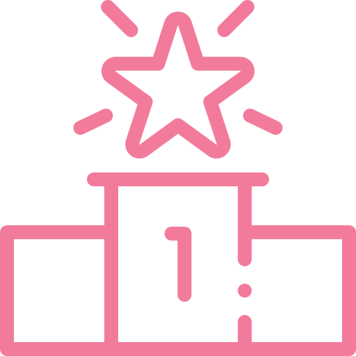
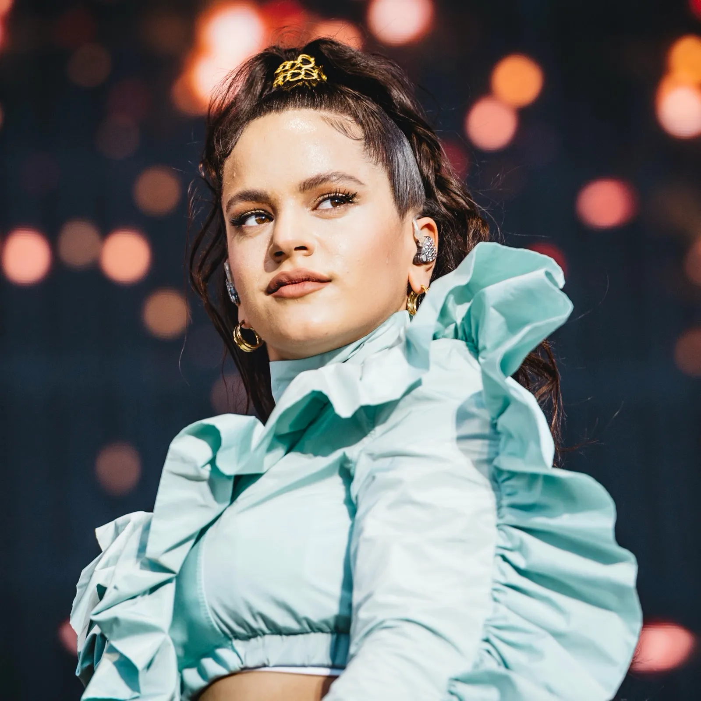

¡¡Los cinco más escuchados por los argentinos!!
-


N1: MANUEL TURIZO
Manuel Turizo es un cantante y compositor colombiano, conocido por su canción «Una Lady como tú», tema con el cual logró obtener reconocimiento internacional. Se posiciona en el primer puesto con su canción «LA BACHATA»
-

N2: BIZARRAP
El joven roductor musical argentino es conocido por sus «BZRP Music Sessions» y sus «BZRP Freestyle Sessions». En esta oportunidad ocupa el puesto número dos con su Session Vol.52 en colaboración con el cantante español Quevedo
-
N3: REI
Rei, el artista urbano y tropical argentino oriundo de zona oeste del Gran Buenos Aires, junto con la nueva promesa de la cumbia, Callejero Fino, se adueñan en este topFive del puesto número tres con «TU TURRITO».
-

N4: MARIA BECERRA
Cantante, compositora y exyoutuber argentina. Primero nos cautivó con sus hilarantes videos en la conocida plataforma y ahora nos alucina con sus letras y música. Esta vuelta ocupa el puesto número cuatro de nuestro ranking con «AUTOMÁTICO».
-

N5: ROSALIA
«Malamente», el primer sencillo de su disco «El mal querer», la trajo al ojo público, mezclando el flamenco tradicional con estilos modernos como el pop, el trap y el hip hop. Su tema «DESPECHÁ» se queda con el último, pero no menos importante, puesto del ranking.